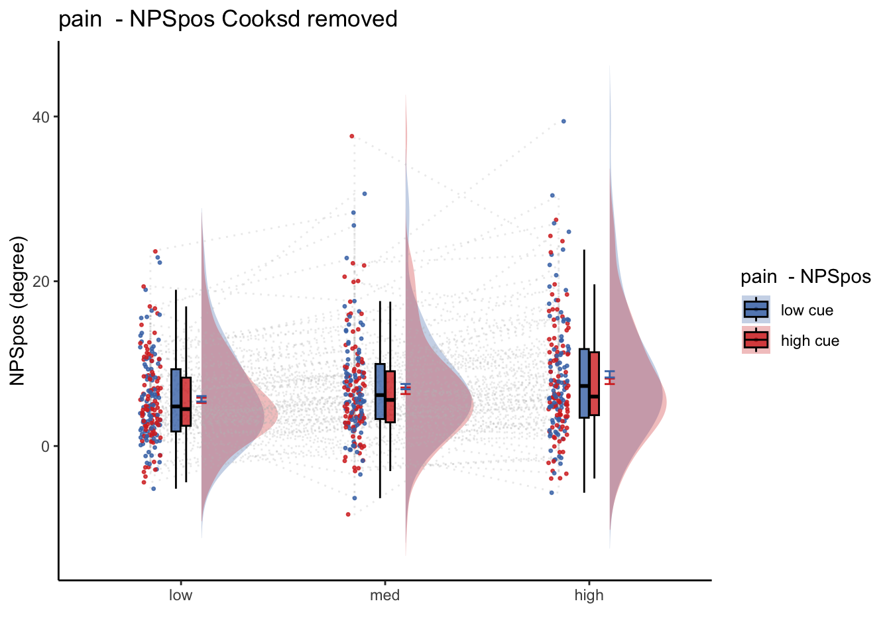
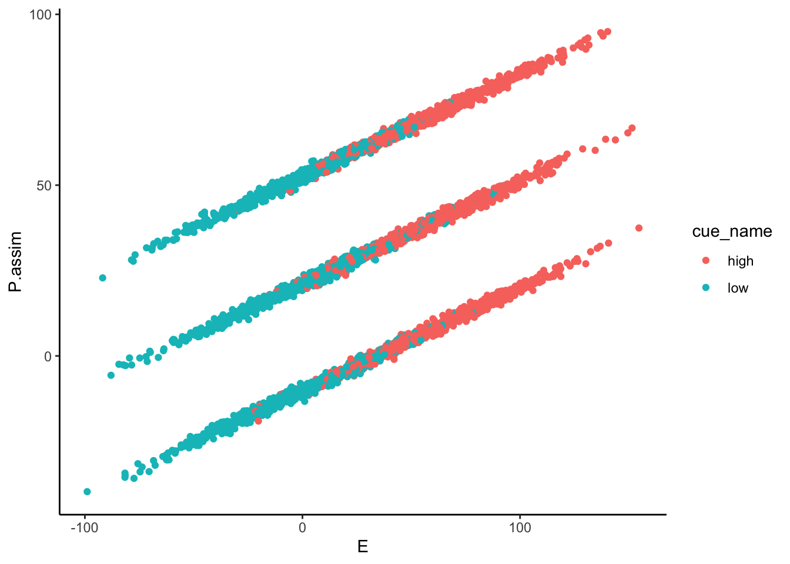
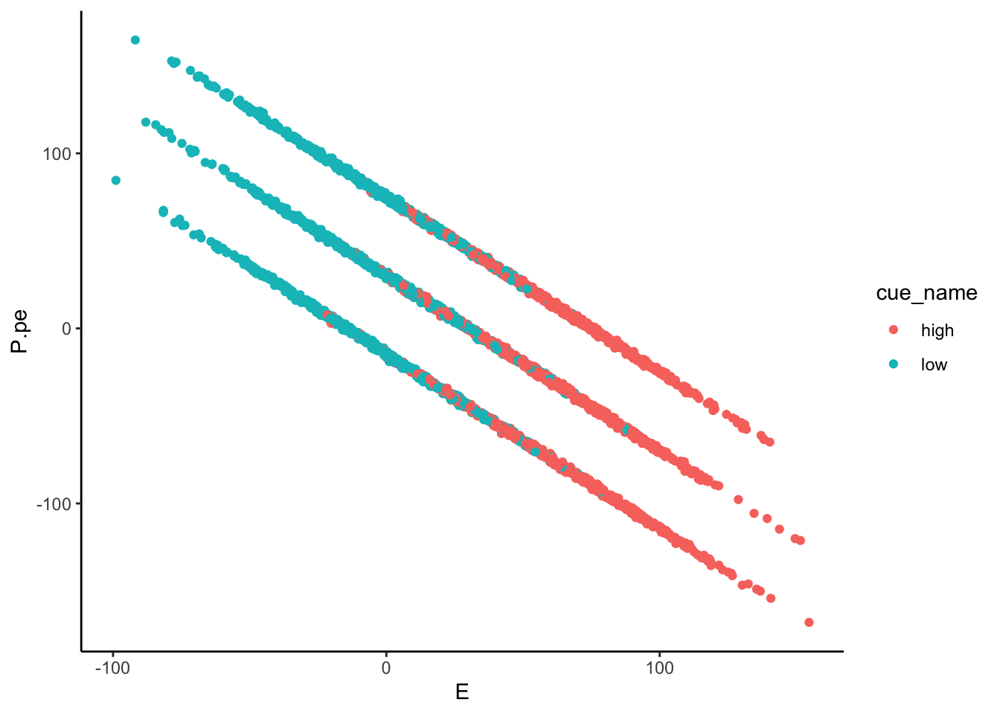
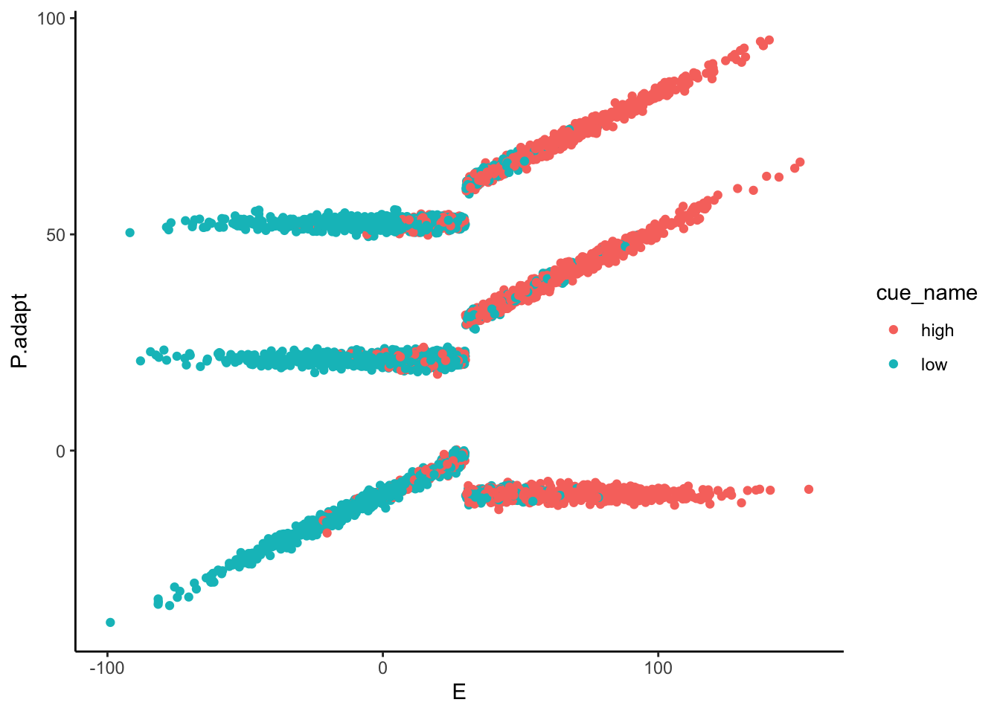

Chapter 12 [model] NPSsimulation
Q. Within pain task, Does stimulus intenisty level and cue level significantly predict NPS dotproducts?

12.0.4 get pain relationship, controlling for cue, cuetype, expect
Code
model.stim <- lmer(event04_actual_angle ~
STIM_linear +
CUE_high_gt_low + STIM_quadratic+ EXPECT_demean +
EXPECT_cmc +
ses +
(1|sub), data = df
)
# CUE_high_gt_low+STIM+EXPECT_demean
sjPlot::tab_model(model.stim,
title = "Multilevel-modeling: \nlmer(NPSpos ~ CUE + STIM + EXPECT_demean + SES + (1| sub), data = pvc)",
CSS = list(css.table = '+font-size: 12;'))| event04_actual_angle | |||
|---|---|---|---|
| Predictors | Estimates | CI | p |
| (Intercept) | 71.33 | 68.56 – 74.10 | <0.001 |
| STIM linear | 29.89 | 28.43 – 31.34 | <0.001 |
| CUE high gt low | -2.04 | -3.55 – -0.53 | 0.008 |
| STIM quadratic | 1.34 | 0.07 – 2.62 | 0.039 |
| EXPECT demean | 0.30 | 0.28 – 0.33 | <0.001 |
| EXPECT cmc | 0.93 | 0.84 – 1.02 | <0.001 |
| sesses-03 | -7.22 | -8.86 – -5.59 | <0.001 |
| sesses-04 | -7.45 | -9.07 – -5.83 | <0.001 |
| Random Effects | |||
| σ2 | 366.84 | ||
| τ00 sub | 157.35 | ||
| ICC | 0.30 | ||
| N sub | 96 | ||
| Observations | 4004 | ||
| Marginal R2 / Conditional R2 | 0.645 / 0.751 | ||
Code
# re.beta <- coef(model.stim)$unit[,"x"]
fixEffect_expect <-as.data.frame(fixef(model.stim))
randEffect_expect <-as.data.frame(ranef(model.stim))Code
ntrials = 12
lowintens = 48;
medintens = 49;
highintens = 50;
stim <- 48:50
painmean = 30 # average pain; arbitrary, on a 0 - 100 scale
painslope = fixEffect_expect['STIM_linear',1] # rise in pain per unit change in stim (per degree)
painslope_stan = 0.33621048
stdCoef.merMod <- function(object) {
sdy <- sd(getME(object,"y"))
sdx <- apply(getME(object,"X"), 2, sd)
sc <- fixef(object)*sdx/sdy
se.fixef <- coef(summary(object))[,"Std. Error"]
se <- se.fixef*sdx/sdy
return(data.frame(stdcoef=sc, stdse=se))
}
stdCoef.merMod(model.stim)## stdcoef stdse
## (Intercept) 0.00000000 0.000000000
## STIM_linear 0.31648413 0.007848709
## CUE_high_gt_low -0.02640086 0.009953683
## STIM_quadratic 0.01621649 0.007849931
## EXPECT_demean 0.22157672 0.009947333
## EXPECT_cmc 0.69471095 0.034434185
## sesses-03 -0.08777975 0.010153298
## sesses-04 -0.09126342 0.010120143Code
# # library(limma)
# S <- rep(stim,times=ntrials) # stim
# C <- rep(rep(c(1,-1), each = 3), times = 6) #cue
# E <- painslope * (C + rnorm(length(C))) + painmean # pseudo nociception
# Szscore <- (S - mean(S)) / sd(S)
df$S <- as.numeric(mapvalues(df$stimintensity,
from = c("low", "med", "high"), c(48, 49, 50)))
df$C <- as.numeric(mapvalues(df$cuetype,
from = c("cuetype-low", "cuetype-high"), c(-1, 1)))
df$E <- painslope * (df$C + rnorm(length(df$C))) + painmean
df$Szscore <- (df$S - mean(df$S, na.rm = TRUE)) / sd(df$S)
df$Pcalib = df$Szscore * painslope + painmean + rnorm(length(df$C))
model.stim2pain <- lmer(Pcalib ~ S + (1|sub), df)
b_stim2pain = fixef(model.stim2pain)[2] #0.4126089 #36.5757
df$Sprime = df$Szscore * b_stim2pain + painmean # subjective pain experience, converted to a scale of 0-180, in order to match expectation ratings
# df$Sprime = df$S * b_stim2pain
df <- df %>%
group_by(sub) %>%
mutate(E = as.numeric(E)) %>%
mutate(avg_E = mean(E, na.rm = TRUE)) %>%
mutate(E_demean = E - avg_E) %>%
mutate(E_cmc = avg_E - mean(avg_E))12.1 simulation **
Code
w = 0.7
error = rnorm(length(df$C))
df$P.assim <- w * df$Sprime + (1 - w) * df$E + error
df$P.pe = df$Sprime - df$E + error
df$P.adapt <- 1
minimal.diff <- (df$Sprime - df$E)/std(df$Sprime) < b_stim2pain
large.diff <- (df$Sprime - df$E)/std(df$Sprime) > b_stim2pain
df$P.adapt[minimal.diff] <- w * df$Sprime[minimal.diff] + (1 - w) * df$E[minimal.diff] + error[minimal.diff]
df$P.adapt[large.diff] <- w * df$Sprime[large.diff] + error[large.diff]
 

 ### P.assim ~ demeaned_expect * cue * stim
### P.assim ~ demeaned_expect * cue * stim